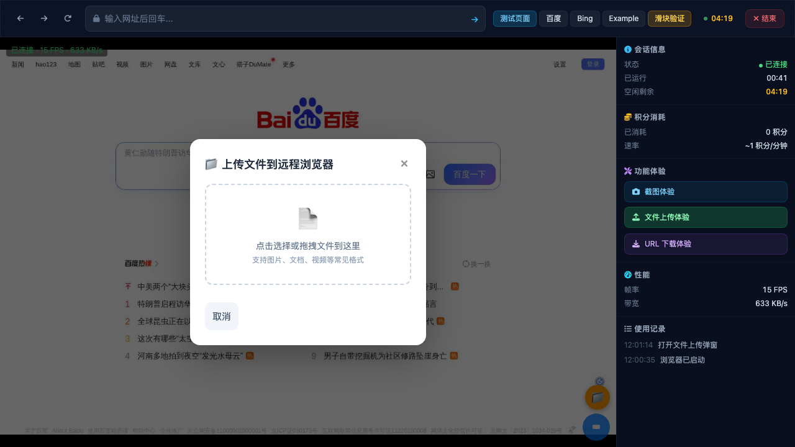
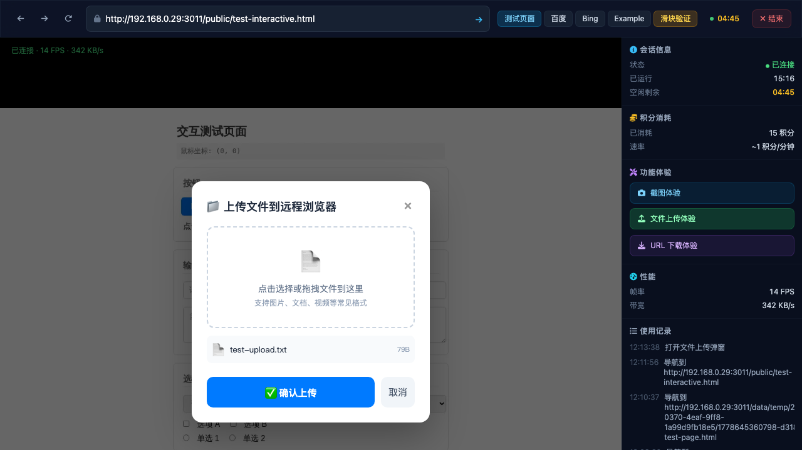
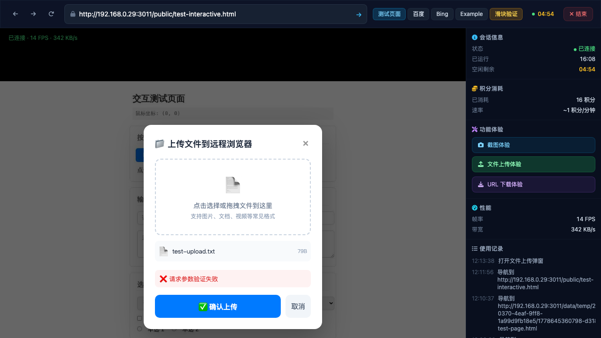
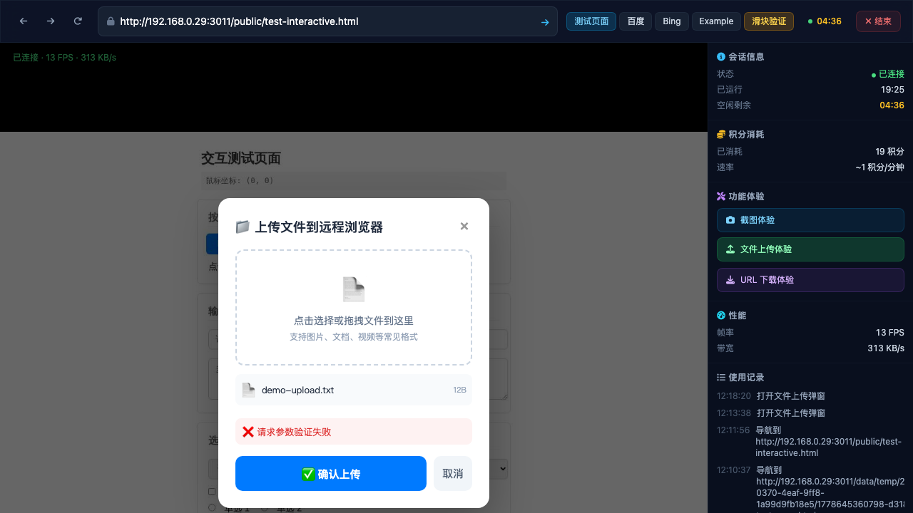

场景 1: PC端 — 上传弹窗完整流程 ⚠️ 部分通过 (发现 Bug)
点击"文件上传体验" → 弹窗出现 → 选择文件 → 文件预览 → 确认上传 → 文件注入远程浏览器 → 页面显示内容
上传流程验证：
① 点击上传按钮
→
② 弹窗出现
→
③ 选择文件
→
④ 文件预览显示
→
⑤ 上传到服务器
→
⑥ 注入远程浏览器 ❌
| 步骤 | 预期 | 实际 | 结果 |
|---|
| 1. 点击"文件上传体验" | 弹出上传弹窗 | 弹窗正常弹出，标题"📁 上传文件到远程浏览器" | ✅ 通过 |
| 2. 弹窗内容完整性 | 拖拽区域 + 文件选择 + 关闭/取消按钮 | ✓ 拖拽区域 "点击选择或拖拽文件到这里"
✓ 格式提示 "支持图片、文档、视频等常见格式"
✓ 关闭(×)按钮 #bv-upload-close
✓ 取消按钮 #bv-upload-cancel
✓ 文件预览区 #bv-upload-preview
✓ 确认按钮 #bv-upload-confirm (初始隐藏) | ✅ 通过 |
| 3. 选择文件后预览 | 文件名 + 大小显示，确认按钮出现 | 预览显示 "test-upload.txt" (79B)，确认按钮变为可见 | ✅ 通过 |
| 4. 上传到服务器 | FormData POST /api/files/upload-session 成功 | API 返回 { success: true, fileId: "1778645360805-bcfkry", machineFilePath: "data/temp/..." } | ✅ 通过 |
| 5. 注入到远程浏览器 | POST /api/sessions/:id/inject-file 成功 | ❌ 返回 "请求参数验证失败" — 缺少 selector 参数 | ❌ 失败 |
| 6. 文件内容显示在页面 | 上传的文件内容出现在远程浏览器中 | 未能验证（因步骤5失败） | ❌ 阻塞 |
🐛 Bug: browser-viewer.js 上传确认缺少 selector 参数
文件: /browser-viewer/browser-viewer.js → window.__bvUploadConfirm 函数
原因: 调用 POST /api/sessions/:id/inject-file 时只传了 machineFilePath，没有传 selector 参数。
但服务端 schema (injectFileRequestSchema) 要求 selector: z.string().min(1) 是必填字段。
前端代码 (有 Bug):
body: JSON.stringify({ machineFilePath: data.data.machineFilePath })
服务端要求:
required: ['machineFilePath', 'selector'] — 路由 session.routes.ts:155
修复建议: 在 inject-file 调用中添加 selector 参数，或者修改服务端 schema 使 selector 可选。

09. 弹窗初始状态（空）

15. 文件选中 + 预览 ✅

16. 确认后 — 验证失败 ❌

17. 弹窗文件选择状态